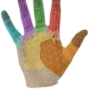

Projects
Construction list. One line per job.
-

linput
Fingers as keys. Work sits in ~/dev/linput/hand.
-
vim / nvim plugins
Editor tools. No public page yet.
-
English learning
Speaking practice. The numbered voice samples are the public part.